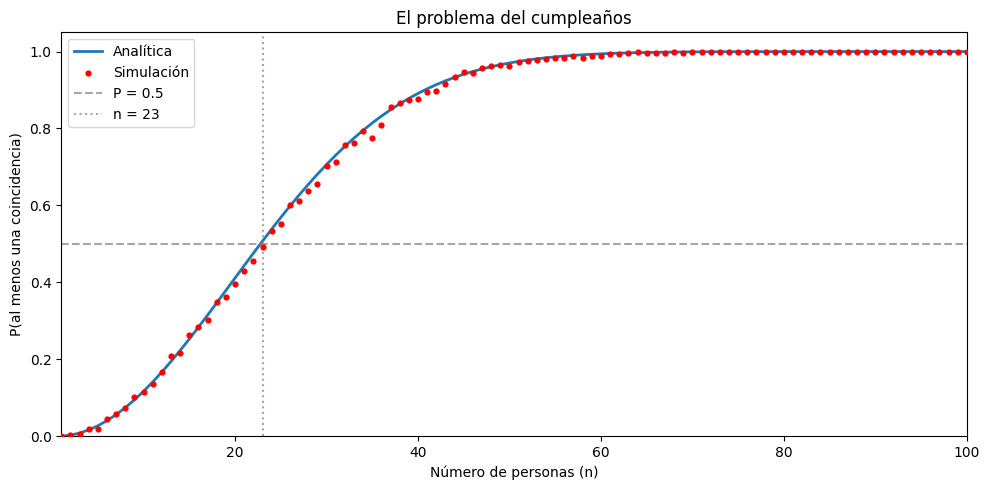

Code
import numpy as np
import matplotlib.pyplot as plt¿cuál es la probabilidad de que en un grupo de \(n\) personas al menos dos compartan el mismo día de cumpleaños?
Spoiler alert: con solo 23 personas la probabilidad ya supera el 50%.
Para simplificar el análisis, asumimos lo siguiente:
Estos supuestos no son perfectamente realistas (en la práctica hay meses con más nacimientos que otros), pero simplifican el cálculo y la conclusión cualitativa se mantiene.
En lugar de calcular directamente la probabilidad de que haya al menos una coincidencia (lo cual involucra muchos casos), usamos el complemento: calculamos la probabilidad de que todos tengan cumpleaños distintos y luego restamos de 1.
Imaginemos que las \(n\) personas entran a una sala una por una:
Como los cumpleaños son independientes, multiplicamos todas estas probabilidades:
\[ P(\text{todos distintos}) = \frac{365}{365} \cdot \frac{364}{365} \cdot \frac{363}{365} \cdots \frac{365 - n + 1}{365} = \prod_{k=0}^{n-1} \frac{365 - k}{365} \]
Finalmente, la probabilidad de que al menos dos personas compartan cumpleaños es:
\[ P(\text{coincidencia}) = 1 - \prod_{k=0}^{n-1} \frac{365 - k}{365} \]
Esta es una expresión exacta que podemos evaluar numéricamente para cualquier valor de \(n\).
import numpy as np
import matplotlib.pyplot as pltDefinimos la función prob_analitica(n) que implementa la fórmula exacta. El algoritmo es directo:
p_todos_distintos = 1.0 (probabilidad acumulada).Luego evaluamos la función para todos los tamaños de grupo de 1 a 80 y buscamos el primer \(n\) donde \(P > 0.5\).
def prob_analitica(n, dias=365):
"""Probabilidad exacta de al menos una coincidencia en un grupo de n personas."""
p_todos_distintos = 1.0
for k in range(n):
p_todos_distintos *= (dias - k) / dias
return 1 - p_todos_distintos
for n in range(1, 365):
p = prob_analitica(n)
print(f"n = {n:3d} personas → P(coincidencia) = {p:.12f}")n = 1 personas → P(coincidencia) = 0.000000000000
n = 2 personas → P(coincidencia) = 0.002739726027
n = 3 personas → P(coincidencia) = 0.008204165885
n = 4 personas → P(coincidencia) = 0.016355912467
n = 5 personas → P(coincidencia) = 0.027135573700
n = 6 personas → P(coincidencia) = 0.040462483649
n = 7 personas → P(coincidencia) = 0.056235703096
n = 8 personas → P(coincidencia) = 0.074335292352
n = 9 personas → P(coincidencia) = 0.094623833889
n = 10 personas → P(coincidencia) = 0.116948177711
n = 11 personas → P(coincidencia) = 0.141141378322
n = 12 personas → P(coincidencia) = 0.167024788838
n = 13 personas → P(coincidencia) = 0.194410275232
n = 14 personas → P(coincidencia) = 0.223102512005
n = 15 personas → P(coincidencia) = 0.252901319764
n = 16 personas → P(coincidencia) = 0.283604005253
n = 17 personas → P(coincidencia) = 0.315007665297
n = 18 personas → P(coincidencia) = 0.346911417872
n = 19 personas → P(coincidencia) = 0.379118526032
n = 20 personas → P(coincidencia) = 0.411438383581
n = 21 personas → P(coincidencia) = 0.443688335165
n = 22 personas → P(coincidencia) = 0.475695307663
n = 23 personas → P(coincidencia) = 0.507297234324
n = 24 personas → P(coincidencia) = 0.538344257915
n = 25 personas → P(coincidencia) = 0.568699703969
n = 26 personas → P(coincidencia) = 0.598240820136
n = 27 personas → P(coincidencia) = 0.626859282263
n = 28 personas → P(coincidencia) = 0.654461472342
n = 29 personas → P(coincidencia) = 0.680968537478
n = 30 personas → P(coincidencia) = 0.706316242719
n = 31 personas → P(coincidencia) = 0.730454633729
n = 32 personas → P(coincidencia) = 0.753347527850
n = 33 personas → P(coincidencia) = 0.774971854176
n = 34 personas → P(coincidencia) = 0.795316864620
n = 35 personas → P(coincidencia) = 0.814383238875
n = 36 personas → P(coincidencia) = 0.832182106380
n = 37 personas → P(coincidencia) = 0.848734008216
n = 38 personas → P(coincidencia) = 0.864067821082
n = 39 personas → P(coincidencia) = 0.878219664367
n = 40 personas → P(coincidencia) = 0.891231809818
n = 41 personas → P(coincidencia) = 0.903151611482
n = 42 personas → P(coincidencia) = 0.914030471562
n = 43 personas → P(coincidencia) = 0.923922855656
n = 44 personas → P(coincidencia) = 0.932885368551
n = 45 personas → P(coincidencia) = 0.940975899466
n = 46 personas → P(coincidencia) = 0.948252843367
n = 47 personas → P(coincidencia) = 0.954774402833
n = 48 personas → P(coincidencia) = 0.960597972879
n = 49 personas → P(coincidencia) = 0.965779609323
n = 50 personas → P(coincidencia) = 0.970373579578
n = 51 personas → P(coincidencia) = 0.974431993334
n = 52 personas → P(coincidencia) = 0.978004509334
n = 53 personas → P(coincidencia) = 0.981138113484
n = 54 personas → P(coincidencia) = 0.983876962759
n = 55 personas → P(coincidencia) = 0.986262288816
n = 56 personas → P(coincidencia) = 0.988332354885
n = 57 personas → P(coincidencia) = 0.990122459341
n = 58 personas → P(coincidencia) = 0.991664979389
n = 59 personas → P(coincidencia) = 0.992989448418
n = 60 personas → P(coincidencia) = 0.994122660865
n = 61 personas → P(coincidencia) = 0.995088798805
n = 62 personas → P(coincidencia) = 0.995909574895
n = 63 personas → P(coincidencia) = 0.996604386831
n = 64 personas → P(coincidencia) = 0.997190478967
n = 65 personas → P(coincidencia) = 0.997683107312
n = 66 personas → P(coincidencia) = 0.998095704640
n = 67 personas → P(coincidencia) = 0.998440042979
n = 68 personas → P(coincidencia) = 0.998726391254
n = 69 personas → P(coincidencia) = 0.998963666308
n = 70 personas → P(coincidencia) = 0.999159575965
n = 71 personas → P(coincidencia) = 0.999320753177
n = 72 personas → P(coincidencia) = 0.999452880641
n = 73 personas → P(coincidencia) = 0.999560805556
n = 74 personas → P(coincidencia) = 0.999648644445
n = 75 personas → P(coincidencia) = 0.999719878174
n = 76 personas → P(coincidencia) = 0.999777437453
n = 77 personas → P(coincidencia) = 0.999823779244
n = 78 personas → P(coincidencia) = 0.999860954581
n = 79 personas → P(coincidencia) = 0.999890668397
n = 80 personas → P(coincidencia) = 0.999914331949
n = 81 personas → P(coincidencia) = 0.999933108508
n = 82 personas → P(coincidencia) = 0.999947952922
n = 83 personas → P(coincidencia) = 0.999959645690
n = 84 personas → P(coincidencia) = 0.999968822149
n = 85 personas → P(coincidencia) = 0.999975997326
n = 86 personas → P(coincidencia) = 0.999981586990
n = 87 personas → P(coincidencia) = 0.999985925398
n = 88 personas → P(coincidencia) = 0.999989280166
n = 89 personas → P(coincidencia) = 0.999991864674
n = 90 personas → P(coincidencia) = 0.999993848356
n = 91 personas → P(coincidencia) = 0.999995365200
n = 92 personas → P(coincidencia) = 0.999996520725
n = 93 personas → P(coincidencia) = 0.999997397693
n = 94 personas → P(coincidencia) = 0.999998060747
n = 95 personas → P(coincidencia) = 0.999998560171
n = 96 personas → P(coincidencia) = 0.999998934921
n = 97 personas → P(coincidencia) = 0.999999215051
n = 98 personas → P(coincidencia) = 0.999999423654
n = 99 personas → P(coincidencia) = 0.999999578399
n = 100 personas → P(coincidencia) = 0.999999692751
n = 101 personas → P(coincidencia) = 0.999999776929
n = 102 personas → P(coincidencia) = 0.999999838655
n = 103 personas → P(coincidencia) = 0.999999883743
n = 104 personas → P(coincidencia) = 0.999999916550
n = 105 personas → P(coincidencia) = 0.999999940328
n = 106 personas → P(coincidencia) = 0.999999957494
n = 107 personas → P(coincidencia) = 0.999999969838
n = 108 personas → P(coincidencia) = 0.999999978680
n = 109 personas → P(coincidencia) = 0.999999984988
n = 110 personas → P(coincidencia) = 0.999999989471
n = 111 personas → P(coincidencia) = 0.999999992644
n = 112 personas → P(coincidencia) = 0.999999994881
n = 113 personas → P(coincidencia) = 0.999999996452
n = 114 personas → P(coincidencia) = 0.999999997550
n = 115 personas → P(coincidencia) = 0.999999998315
n = 116 personas → P(coincidencia) = 0.999999998846
n = 117 personas → P(coincidencia) = 0.999999999213
n = 118 personas → P(coincidencia) = 0.999999999465
n = 119 personas → P(coincidencia) = 0.999999999638
n = 120 personas → P(coincidencia) = 0.999999999756
n = 121 personas → P(coincidencia) = 0.999999999836
n = 122 personas → P(coincidencia) = 0.999999999891
n = 123 personas → P(coincidencia) = 0.999999999927
n = 124 personas → P(coincidencia) = 0.999999999952
n = 125 personas → P(coincidencia) = 0.999999999968
n = 126 personas → P(coincidencia) = 0.999999999979
n = 127 personas → P(coincidencia) = 0.999999999986
n = 128 personas → P(coincidencia) = 0.999999999991
n = 129 personas → P(coincidencia) = 0.999999999994
n = 130 personas → P(coincidencia) = 0.999999999996
n = 131 personas → P(coincidencia) = 0.999999999998
n = 132 personas → P(coincidencia) = 0.999999999998
n = 133 personas → P(coincidencia) = 0.999999999999
n = 134 personas → P(coincidencia) = 0.999999999999
n = 135 personas → P(coincidencia) = 1.000000000000
n = 136 personas → P(coincidencia) = 1.000000000000
n = 137 personas → P(coincidencia) = 1.000000000000
n = 138 personas → P(coincidencia) = 1.000000000000
n = 139 personas → P(coincidencia) = 1.000000000000
n = 140 personas → P(coincidencia) = 1.000000000000
n = 141 personas → P(coincidencia) = 1.000000000000
n = 142 personas → P(coincidencia) = 1.000000000000
n = 143 personas → P(coincidencia) = 1.000000000000
n = 144 personas → P(coincidencia) = 1.000000000000
n = 145 personas → P(coincidencia) = 1.000000000000
n = 146 personas → P(coincidencia) = 1.000000000000
n = 147 personas → P(coincidencia) = 1.000000000000
n = 148 personas → P(coincidencia) = 1.000000000000
n = 149 personas → P(coincidencia) = 1.000000000000
n = 150 personas → P(coincidencia) = 1.000000000000
n = 151 personas → P(coincidencia) = 1.000000000000
n = 152 personas → P(coincidencia) = 1.000000000000
n = 153 personas → P(coincidencia) = 1.000000000000
n = 154 personas → P(coincidencia) = 1.000000000000
n = 155 personas → P(coincidencia) = 1.000000000000
n = 156 personas → P(coincidencia) = 1.000000000000
n = 157 personas → P(coincidencia) = 1.000000000000
n = 158 personas → P(coincidencia) = 1.000000000000
n = 159 personas → P(coincidencia) = 1.000000000000
n = 160 personas → P(coincidencia) = 1.000000000000
n = 161 personas → P(coincidencia) = 1.000000000000
n = 162 personas → P(coincidencia) = 1.000000000000
n = 163 personas → P(coincidencia) = 1.000000000000
n = 164 personas → P(coincidencia) = 1.000000000000
n = 165 personas → P(coincidencia) = 1.000000000000
n = 166 personas → P(coincidencia) = 1.000000000000
n = 167 personas → P(coincidencia) = 1.000000000000
n = 168 personas → P(coincidencia) = 1.000000000000
n = 169 personas → P(coincidencia) = 1.000000000000
n = 170 personas → P(coincidencia) = 1.000000000000
n = 171 personas → P(coincidencia) = 1.000000000000
n = 172 personas → P(coincidencia) = 1.000000000000
n = 173 personas → P(coincidencia) = 1.000000000000
n = 174 personas → P(coincidencia) = 1.000000000000
n = 175 personas → P(coincidencia) = 1.000000000000
n = 176 personas → P(coincidencia) = 1.000000000000
n = 177 personas → P(coincidencia) = 1.000000000000
n = 178 personas → P(coincidencia) = 1.000000000000
n = 179 personas → P(coincidencia) = 1.000000000000
n = 180 personas → P(coincidencia) = 1.000000000000
n = 181 personas → P(coincidencia) = 1.000000000000
n = 182 personas → P(coincidencia) = 1.000000000000
n = 183 personas → P(coincidencia) = 1.000000000000
n = 184 personas → P(coincidencia) = 1.000000000000
n = 185 personas → P(coincidencia) = 1.000000000000
n = 186 personas → P(coincidencia) = 1.000000000000
n = 187 personas → P(coincidencia) = 1.000000000000
n = 188 personas → P(coincidencia) = 1.000000000000
n = 189 personas → P(coincidencia) = 1.000000000000
n = 190 personas → P(coincidencia) = 1.000000000000
n = 191 personas → P(coincidencia) = 1.000000000000
n = 192 personas → P(coincidencia) = 1.000000000000
n = 193 personas → P(coincidencia) = 1.000000000000
n = 194 personas → P(coincidencia) = 1.000000000000
n = 195 personas → P(coincidencia) = 1.000000000000
n = 196 personas → P(coincidencia) = 1.000000000000
n = 197 personas → P(coincidencia) = 1.000000000000
n = 198 personas → P(coincidencia) = 1.000000000000
n = 199 personas → P(coincidencia) = 1.000000000000
n = 200 personas → P(coincidencia) = 1.000000000000
n = 201 personas → P(coincidencia) = 1.000000000000
n = 202 personas → P(coincidencia) = 1.000000000000
n = 203 personas → P(coincidencia) = 1.000000000000
n = 204 personas → P(coincidencia) = 1.000000000000
n = 205 personas → P(coincidencia) = 1.000000000000
n = 206 personas → P(coincidencia) = 1.000000000000
n = 207 personas → P(coincidencia) = 1.000000000000
n = 208 personas → P(coincidencia) = 1.000000000000
n = 209 personas → P(coincidencia) = 1.000000000000
n = 210 personas → P(coincidencia) = 1.000000000000
n = 211 personas → P(coincidencia) = 1.000000000000
n = 212 personas → P(coincidencia) = 1.000000000000
n = 213 personas → P(coincidencia) = 1.000000000000
n = 214 personas → P(coincidencia) = 1.000000000000
n = 215 personas → P(coincidencia) = 1.000000000000
n = 216 personas → P(coincidencia) = 1.000000000000
n = 217 personas → P(coincidencia) = 1.000000000000
n = 218 personas → P(coincidencia) = 1.000000000000
n = 219 personas → P(coincidencia) = 1.000000000000
n = 220 personas → P(coincidencia) = 1.000000000000
n = 221 personas → P(coincidencia) = 1.000000000000
n = 222 personas → P(coincidencia) = 1.000000000000
n = 223 personas → P(coincidencia) = 1.000000000000
n = 224 personas → P(coincidencia) = 1.000000000000
n = 225 personas → P(coincidencia) = 1.000000000000
n = 226 personas → P(coincidencia) = 1.000000000000
n = 227 personas → P(coincidencia) = 1.000000000000
n = 228 personas → P(coincidencia) = 1.000000000000
n = 229 personas → P(coincidencia) = 1.000000000000
n = 230 personas → P(coincidencia) = 1.000000000000
n = 231 personas → P(coincidencia) = 1.000000000000
n = 232 personas → P(coincidencia) = 1.000000000000
n = 233 personas → P(coincidencia) = 1.000000000000
n = 234 personas → P(coincidencia) = 1.000000000000
n = 235 personas → P(coincidencia) = 1.000000000000
n = 236 personas → P(coincidencia) = 1.000000000000
n = 237 personas → P(coincidencia) = 1.000000000000
n = 238 personas → P(coincidencia) = 1.000000000000
n = 239 personas → P(coincidencia) = 1.000000000000
n = 240 personas → P(coincidencia) = 1.000000000000
n = 241 personas → P(coincidencia) = 1.000000000000
n = 242 personas → P(coincidencia) = 1.000000000000
n = 243 personas → P(coincidencia) = 1.000000000000
n = 244 personas → P(coincidencia) = 1.000000000000
n = 245 personas → P(coincidencia) = 1.000000000000
n = 246 personas → P(coincidencia) = 1.000000000000
n = 247 personas → P(coincidencia) = 1.000000000000
n = 248 personas → P(coincidencia) = 1.000000000000
n = 249 personas → P(coincidencia) = 1.000000000000
n = 250 personas → P(coincidencia) = 1.000000000000
n = 251 personas → P(coincidencia) = 1.000000000000
n = 252 personas → P(coincidencia) = 1.000000000000
n = 253 personas → P(coincidencia) = 1.000000000000
n = 254 personas → P(coincidencia) = 1.000000000000
n = 255 personas → P(coincidencia) = 1.000000000000
n = 256 personas → P(coincidencia) = 1.000000000000
n = 257 personas → P(coincidencia) = 1.000000000000
n = 258 personas → P(coincidencia) = 1.000000000000
n = 259 personas → P(coincidencia) = 1.000000000000
n = 260 personas → P(coincidencia) = 1.000000000000
n = 261 personas → P(coincidencia) = 1.000000000000
n = 262 personas → P(coincidencia) = 1.000000000000
n = 263 personas → P(coincidencia) = 1.000000000000
n = 264 personas → P(coincidencia) = 1.000000000000
n = 265 personas → P(coincidencia) = 1.000000000000
n = 266 personas → P(coincidencia) = 1.000000000000
n = 267 personas → P(coincidencia) = 1.000000000000
n = 268 personas → P(coincidencia) = 1.000000000000
n = 269 personas → P(coincidencia) = 1.000000000000
n = 270 personas → P(coincidencia) = 1.000000000000
n = 271 personas → P(coincidencia) = 1.000000000000
n = 272 personas → P(coincidencia) = 1.000000000000
n = 273 personas → P(coincidencia) = 1.000000000000
n = 274 personas → P(coincidencia) = 1.000000000000
n = 275 personas → P(coincidencia) = 1.000000000000
n = 276 personas → P(coincidencia) = 1.000000000000
n = 277 personas → P(coincidencia) = 1.000000000000
n = 278 personas → P(coincidencia) = 1.000000000000
n = 279 personas → P(coincidencia) = 1.000000000000
n = 280 personas → P(coincidencia) = 1.000000000000
n = 281 personas → P(coincidencia) = 1.000000000000
n = 282 personas → P(coincidencia) = 1.000000000000
n = 283 personas → P(coincidencia) = 1.000000000000
n = 284 personas → P(coincidencia) = 1.000000000000
n = 285 personas → P(coincidencia) = 1.000000000000
n = 286 personas → P(coincidencia) = 1.000000000000
n = 287 personas → P(coincidencia) = 1.000000000000
n = 288 personas → P(coincidencia) = 1.000000000000
n = 289 personas → P(coincidencia) = 1.000000000000
n = 290 personas → P(coincidencia) = 1.000000000000
n = 291 personas → P(coincidencia) = 1.000000000000
n = 292 personas → P(coincidencia) = 1.000000000000
n = 293 personas → P(coincidencia) = 1.000000000000
n = 294 personas → P(coincidencia) = 1.000000000000
n = 295 personas → P(coincidencia) = 1.000000000000
n = 296 personas → P(coincidencia) = 1.000000000000
n = 297 personas → P(coincidencia) = 1.000000000000
n = 298 personas → P(coincidencia) = 1.000000000000
n = 299 personas → P(coincidencia) = 1.000000000000
n = 300 personas → P(coincidencia) = 1.000000000000
n = 301 personas → P(coincidencia) = 1.000000000000
n = 302 personas → P(coincidencia) = 1.000000000000
n = 303 personas → P(coincidencia) = 1.000000000000
n = 304 personas → P(coincidencia) = 1.000000000000
n = 305 personas → P(coincidencia) = 1.000000000000
n = 306 personas → P(coincidencia) = 1.000000000000
n = 307 personas → P(coincidencia) = 1.000000000000
n = 308 personas → P(coincidencia) = 1.000000000000
n = 309 personas → P(coincidencia) = 1.000000000000
n = 310 personas → P(coincidencia) = 1.000000000000
n = 311 personas → P(coincidencia) = 1.000000000000
n = 312 personas → P(coincidencia) = 1.000000000000
n = 313 personas → P(coincidencia) = 1.000000000000
n = 314 personas → P(coincidencia) = 1.000000000000
n = 315 personas → P(coincidencia) = 1.000000000000
n = 316 personas → P(coincidencia) = 1.000000000000
n = 317 personas → P(coincidencia) = 1.000000000000
n = 318 personas → P(coincidencia) = 1.000000000000
n = 319 personas → P(coincidencia) = 1.000000000000
n = 320 personas → P(coincidencia) = 1.000000000000
n = 321 personas → P(coincidencia) = 1.000000000000
n = 322 personas → P(coincidencia) = 1.000000000000
n = 323 personas → P(coincidencia) = 1.000000000000
n = 324 personas → P(coincidencia) = 1.000000000000
n = 325 personas → P(coincidencia) = 1.000000000000
n = 326 personas → P(coincidencia) = 1.000000000000
n = 327 personas → P(coincidencia) = 1.000000000000
n = 328 personas → P(coincidencia) = 1.000000000000
n = 329 personas → P(coincidencia) = 1.000000000000
n = 330 personas → P(coincidencia) = 1.000000000000
n = 331 personas → P(coincidencia) = 1.000000000000
n = 332 personas → P(coincidencia) = 1.000000000000
n = 333 personas → P(coincidencia) = 1.000000000000
n = 334 personas → P(coincidencia) = 1.000000000000
n = 335 personas → P(coincidencia) = 1.000000000000
n = 336 personas → P(coincidencia) = 1.000000000000
n = 337 personas → P(coincidencia) = 1.000000000000
n = 338 personas → P(coincidencia) = 1.000000000000
n = 339 personas → P(coincidencia) = 1.000000000000
n = 340 personas → P(coincidencia) = 1.000000000000
n = 341 personas → P(coincidencia) = 1.000000000000
n = 342 personas → P(coincidencia) = 1.000000000000
n = 343 personas → P(coincidencia) = 1.000000000000
n = 344 personas → P(coincidencia) = 1.000000000000
n = 345 personas → P(coincidencia) = 1.000000000000
n = 346 personas → P(coincidencia) = 1.000000000000
n = 347 personas → P(coincidencia) = 1.000000000000
n = 348 personas → P(coincidencia) = 1.000000000000
n = 349 personas → P(coincidencia) = 1.000000000000
n = 350 personas → P(coincidencia) = 1.000000000000
n = 351 personas → P(coincidencia) = 1.000000000000
n = 352 personas → P(coincidencia) = 1.000000000000
n = 353 personas → P(coincidencia) = 1.000000000000
n = 354 personas → P(coincidencia) = 1.000000000000
n = 355 personas → P(coincidencia) = 1.000000000000
n = 356 personas → P(coincidencia) = 1.000000000000
n = 357 personas → P(coincidencia) = 1.000000000000
n = 358 personas → P(coincidencia) = 1.000000000000
n = 359 personas → P(coincidencia) = 1.000000000000
n = 360 personas → P(coincidencia) = 1.000000000000
n = 361 personas → P(coincidencia) = 1.000000000000
n = 362 personas → P(coincidencia) = 1.000000000000
n = 363 personas → P(coincidencia) = 1.000000000000
n = 364 personas → P(coincidencia) = 1.000000000000Antes de armar la simulación completa, veamos paso a paso cómo funciona un solo experimento. Supongamos un grupo de 5 personas:
Paso 1 — Generar cumpleaños aleatorios: asignamos a cada persona un número entero entre 0 y 364. Cada número representa un día del año (0 = 1 de enero, 364 = 31 de diciembre).
Paso 2 — Detectar repetidos: convertimos la lista a un conjunto (set), que automáticamente elimina duplicados. Si el conjunto tiene menos elementos que la lista original, significa que al menos dos personas comparten cumpleaños.
# Paso 1: Generar cumpleaños aleatorios para 5 personas
rng = np.random.default_rng(42)
n = 50
cumples = rng.integers(0, 365, size=n)
print(f"Grupo de {n} personas")
print(f"Cumpleaños generados (día del año): {cumples}")Grupo de 50 personas
Cumpleaños generados (día del año): [ 32 282 238 160 158 313 31 254 73 34 192 356 268 277 261 286 187 46
306 164 182 135 66 338 285 235 146 300 199 161 164 82 33 202 324 23
313 302 101 230 60 276 255 129 24 354 162 325 247 284]# Paso 2: Convertir a conjunto para eliminar duplicados
cumples_unicos = set(cumples)
print(f"Cumpleaños únicos (sin repetidos): {cumples_unicos} y son {len(cumples_unicos)}")Cumpleaños únicos (sin repetidos): {np.int64(129), np.int64(261), np.int64(135), np.int64(268), np.int64(146), np.int64(276), np.int64(277), np.int64(23), np.int64(24), np.int64(282), np.int64(284), np.int64(285), np.int64(286), np.int64(158), np.int64(32), np.int64(160), np.int64(34), np.int64(31), np.int64(164), np.int64(161), np.int64(33), np.int64(162), np.int64(300), np.int64(46), np.int64(302), np.int64(306), np.int64(182), np.int64(313), np.int64(187), np.int64(60), np.int64(192), np.int64(66), np.int64(324), np.int64(325), np.int64(199), np.int64(73), np.int64(202), np.int64(338), np.int64(82), np.int64(354), np.int64(356), np.int64(101), np.int64(230), np.int64(235), np.int64(238), np.int64(247), np.int64(254), np.int64(255)} y son 48# Paso 3: Comparar tamaños
print(f"\nTotal de personas: {len(cumples)}")
print(f"Cumpleaños distintos: {len(cumples_unicos)}")
if len(cumples_unicos) < n:
print("→ ¡Hay al menos una coincidencia!")
else:
print("→ No hay coincidencias en este grupo.")
Total de personas: 50
Cumpleaños distintos: 48
→ ¡Hay al menos una coincidencia!Ahora encapsulamos esta lógica en una función simular_cumpleanos que repite el experimento n_sim veces y cuenta en qué fracción hubo coincidencia. Luego la ejecutamos para grupos de 1 a 100 personas.
def simular_cumpleanos(n, n_sim=1000, dias=365, seed=42):
"""Estima la probabilidad de coincidencia por simulación."""
rng = np.random.default_rng(seed)
coincidencias = 0
for _ in range(n_sim):
cumples = rng.integers(0, dias, size=n)
if len(set(cumples)) < n:
coincidencias += 1
return coincidencias / n_sim
# Simular para varios tamaños de grupo (1 a 100 personas)
ns_sim = np.arange(1, 101)
probs_sim = [simular_cumpleanos(n) for n in ns_sim]
probs_sim[0.0,
0.004,
0.006,
0.02,
0.02,
0.046,
0.058,
0.073,
0.103,
0.114,
0.137,
0.167,
0.209,
0.216,
0.262,
0.283,
0.301,
0.348,
0.361,
0.397,
0.429,
0.455,
0.493,
0.534,
0.553,
0.6,
0.611,
0.637,
0.656,
0.703,
0.714,
0.756,
0.761,
0.793,
0.776,
0.81,
0.855,
0.867,
0.874,
0.877,
0.894,
0.898,
0.915,
0.934,
0.947,
0.944,
0.958,
0.963,
0.964,
0.963,
0.972,
0.976,
0.977,
0.981,
0.984,
0.982,
0.988,
0.982,
0.988,
0.989,
0.993,
0.993,
0.995,
0.999,
0.997,
0.996,
0.997,
0.998,
0.996,
0.998,
0.999,
1.0,
0.999,
0.998,
1.0,
1.0,
1.0,
1.0,
1.0,
1.0,
1.0,
1.0,
1.0,
1.0,
1.0,
1.0,
1.0,
1.0,
1.0,
1.0,
1.0,
1.0,
1.0,
1.0,
1.0,
1.0,
1.0,
1.0,
1.0,
1.0]El siguiente gráfico superpone ambos resultados: la curva azul es la solución analítica exacta y los puntos rojos son las estimaciones por simulación. Si la simulación está bien implementada, los puntos deberían caer muy cerca de la curva teórica.
ns = np.arange(1, 101)
probs = [prob_analitica(n) for n in ns]
fig, ax = plt.subplots(figsize=(10, 5))
ax.plot(ns, probs, label="Analítica", linewidth=2)
ax.scatter(ns_sim, probs_sim, s=12, color="red", label="Simulación", zorder=5)
ax.axhline(0.5, color="gray", linestyle="--", alpha=0.7, label="P = 0.5")
ax.axvline(23, color="gray", linestyle=":", alpha=0.7, label="n = 23")
ax.set_xlabel("Número de personas (n)")
ax.set_ylabel("P(al menos una coincidencia)")
ax.set_title("El problema del cumpleaños")
ax.legend()
ax.set_xlim(1, 100)
ax.set_ylim(0, 1.05)
plt.tight_layout()
plt.show()